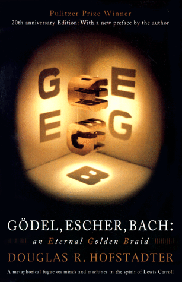

Evaluate the following expressions using Python’s rules of
precedence:
3 + 3 * 3 * 3 + 3 + 3 * 3
10 ** ((9 + 8) % 7) + 6 * (5 + 4 + 3 // 2 + 1)
Precedence Trace #1a
Precedence Trace #1b
Problem 2
Write a python function max3(a, b, c)
that returns the largest of its three arguments but does so without
calling any built-in Python functions.
A Possible Buggy First Attempt
def max3(a, b, c):
"""Returns the largest of the three arguments a, b, and c."""
if a > b and a > c:
return a
if b > a and b > c:
return b
if c > a and c > b:
return c
The bug icon indicates that this code has some issues. In what cases
would this implementation of max3 fail?
Using Nested if Statements
def max3(a, b, c):
"""Returns the largest of the three arguments a, b, and c."""
if a > b:
if a > c:
return a
else:
return c
else:
if b > c:
return b
else:
return c
Using Decomposition
def max3(a, b, c):
"""Returns the largest of the three arguments a, b, and c."""
return max2( a, max2(b, c))
def max2(a, b):
"""Returns the largest of the two arguments a and b."""
if a > b:
return a
else:
return b
Problem 3
As far as I know, the only computer scientist to
win a Pulitzer prize is Douglas Hofstadter, who won one for Gödel,
Escher, Bach, a delightful exploration of the intricacies of
computation.
Hofstadter’s book includes many famous mathematical
puzzles, including this one:
Pick some positive integer and call it n.
If n is even, divide it by two.
If n is odd, multiply it by three and add one.
Continue this process until n is equal to one.
This sequence is often called the Hailstone
Sequence, because the numbers go up and down before reaching the
end of the process.

The Hailstone Function
You task in this problem is to write a function
hailstone which takes as an argument the
starting value of the sequence.
It should then print off each number of the sequence on a new line,
ending with the number one
Upon reaching one, your function should return the number
of steps it took to reach one from the starting value
The fascinating thing about this problem is that no one has been able
to prove that it always stops. The conjecture that this process always
terminates is called the Collatz Conjecture, and appears in the
following XKCD cartoon by Randall Munroe: